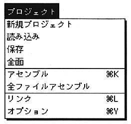
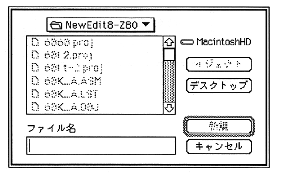

Return to previous page ｜ Return to menu ｜ Go to next page
-
Project menu
- The “Project” menu provides commands for managing project windows, executing assembly, and executing links.
Most operations other than text editing can be performed in this menu.

-
New project
- Opens a new project window.
Cannot be used if there is a project already open. A dialog will appear requesting the name of the project. The extension ".PROJ" is automatically attached to the entered name.

Return to previous page ｜ Return to menu ｜ Go to next page